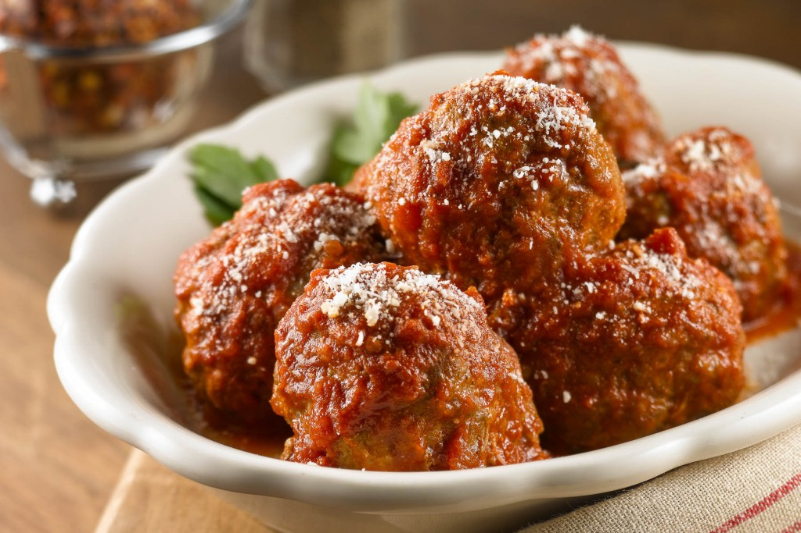

500ml/18fl oz vegetable or beef stock (from a cube)
400g/14oz dried spaghetti
salt and peppe
1 tsp dried mixed herbs

For the Sauce
400g/14oz beef mince
1 garlic clove, finely chopped
½ tsp dried mixed herbs
1 tbsp olive oil
How-To:
Heat a large saucepan over a medium heat and add the olive oil. Once hot, add the onion and cook gently without browning for 4-5 minutes, or until softened and translucent. Add the garlic, continue to cook for two minutes until aromatic, then add the dried herbs, tomatoes and stock. Bring the sauce to a simmer, reduce the heat and simmer gently while you make the meatballs.
For the meatballs, mix together the mince, garlic and herbs along with a decent pinch of salt and pepper. Using your hands roll into 20 balls.
Heat a frying pan over a medium heat and add the olive oil. Once hot, fry the meatballs on all sides until nicely coloured, being careful not to burn them. You may need to do this in batches. Transfer to the saucepan holding the sauce.
Continue to simmer the sauce for 10 minutes while you cook the spaghetti.
Bring a large saucepan of water to the boil, add a pinch of salt and cook the spaghetti according to the packet instructions. Once cooked, drain and tip into the saucepan with the meatball sauce. Mix well and serve hot.